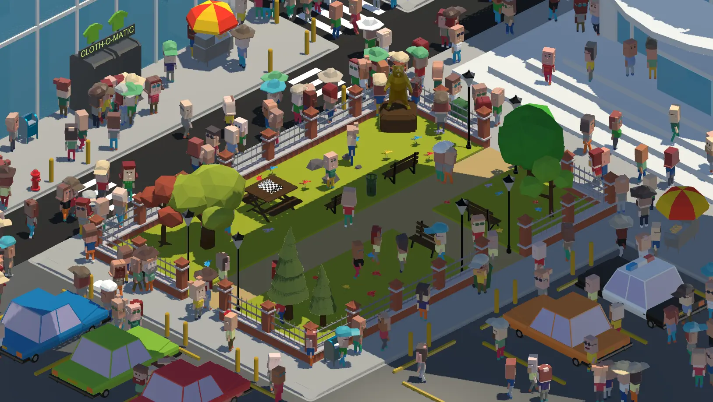
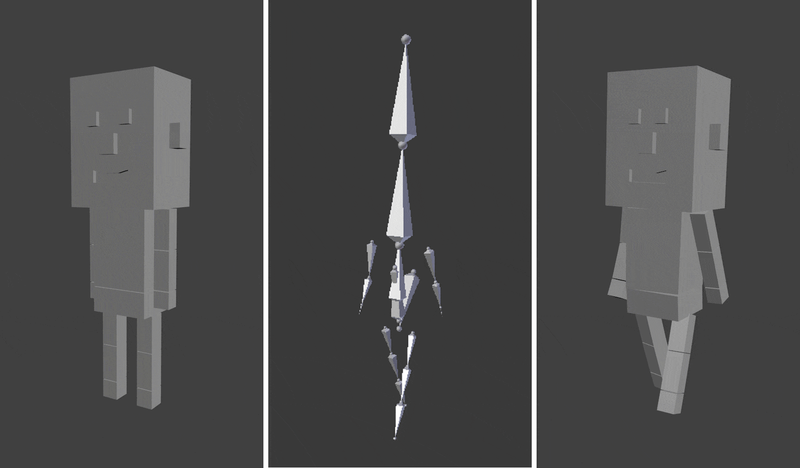
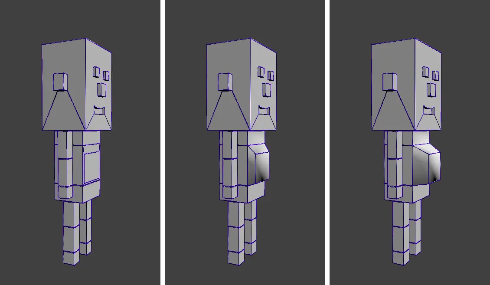
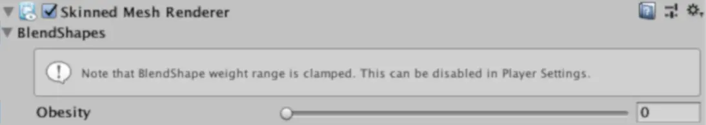
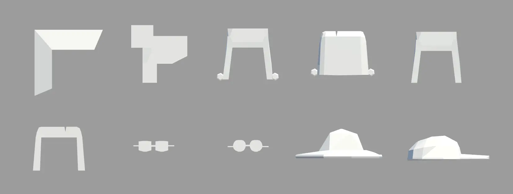
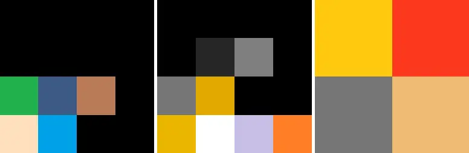

Recently, I worked with two of my friends on an isometric party game. Throughout different game modes,
the main goal for players is to find a person in the middle of the crowd.
One of the main features is having a huge variety of NPCs which go about their businesses.
In this post, I will explain a simple method we use for making this possible.
1 Blender
1.1 Base models and animations
I started to create two "naked" models with Blender.
I rigged these and created the animations we need for the game (walk, attack and throw a balloon).
As we decided to have non-realistic cubic characters, our animations were easy to make.

1.2 Shapes Keys

To add some variety on our models I used a method called mesh morphing.
It is a transformation of a volume defined by the position of its vertices into another volume having
the same number of vertices but arranged differently.
It is just possible to deform a mesh but not to add details on it.
With Blender it is done by adding some Shape Keys on the mesh.
In UNITY, when we import a model with Shape Keys (called Blend Shapes), we can tweak them in the Skinned Mesh Renderer.

Also, in script we can access to all Blend Shapes and set a value for each. This method allows us to have different morphologies on NPCs.
1.3 Other assets
I also created assets like hats, beards, hair, glasses, eyebrows, etc. to dress NPCs.

1.4 Texturing
The advantage of making a low poly game is that we don't need realistic texturing. As we decided to have
only colors, our textures are very simple.
They are defined as 4x4 size texture where each pixel is a color of the mesh. An asset can have a
maximum of 16 colors.
Some color textures for characters, cars or hot-dog stand:

2 UNITY
In Unity, the magic happens.
We spawn X male or female NPC model. For each model, we randomly choose a value for each Shape Key.
Also, for each body part (skin, t-shirt, short, eyes, etc.)
we pick a color from a list. After that we start to dress the model.
There are five types of elements: hats, hair, beards, glasses and eyebrows. For each type, we randomly
pick an item in a list of assets associated to the type and a color.
The chosen assets are placed correctly on the NPC model in the editor, disabled and saved in the base
model prefab in advance. When we choose an asset, we simply enable it.
It's too tricky and restrictive to set position/rotation for each asset in script.
This method is quite simple but allows having a big variety of NPCs. But the main problem is that we
need a lot of assets if we want to avoid repetition.
On the screen below we can see a redundancy on hats and glasses.
Here some in-game screenshots and a showcase :